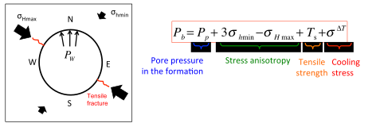
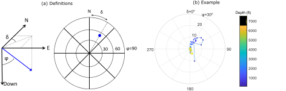
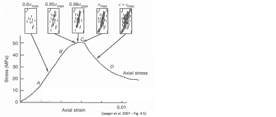
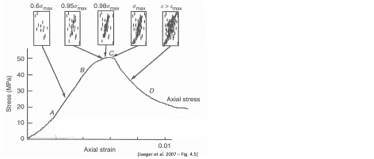
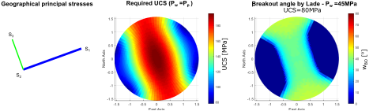

Next: 7.4 Multistage stage hydraulic Up: 7. Hydraulic fracturing Previous: 7.2 Hydraulic fractures in Contents
The creation of a hydraulic fracture improves dramatically the surface area of the wellbore in contact with the formation, and also the corresponding production rates (at the same bottomhole pressure).
The ratio between the area of a fracture (constant height and half-length ) and the area of an openhole wellbore (radius  and height ) is
and height ) is
 .
Fractures are usually much longer than the radius of the wellbore on so does its area compared to the area of the wellbore.
The use of a skin factor permits calculating the flow rates in the presence of the fracture using the wellbore equation (Figure 7.11).
.
Fractures are usually much longer than the radius of the wellbore on so does its area compared to the area of the wellbore.
The use of a skin factor permits calculating the flow rates in the presence of the fracture using the wellbore equation (Figure 7.11).
![\includegraphics[scale=0.65]{.././Figures/split/9B-2.pdf}](img950.svg) |
Several physical processes interact during the propagation of fluid-driven fractures (Figure 7.13). The main processes include:
The first step consists on solving the deformation of a fracture subjected to external far-field stresses
and pressure in the fracture  .
The example in Figure 7.14 shows a 2D example of a fracture within a infinitely large and impervious medium.
The fracture has a fluid pressure that varies along the length of the fracture.
The center is pressurized at pressure and the ends have zero pressure.
The medium is has a far-field minimum principal stress
.
The example in Figure 7.14 shows a 2D example of a fracture within a infinitely large and impervious medium.
The fracture has a fluid pressure that varies along the length of the fracture.
The center is pressurized at pressure and the ends have zero pressure.
The medium is has a far-field minimum principal stress  acting perpendicular to the fracture.
The net pressure is defined as the difference between the fluid pressure in the fracture and least principal total stress .
acting perpendicular to the fracture.
The net pressure is defined as the difference between the fluid pressure in the fracture and least principal total stress .
 |
(7.2) |
For example, the fracture in Figure 7.14 has positive net pressure in the center and negative net pressure in the ends.
A fluid-driven fracture will open if and only if , i.e.,  .
Also, the net pressure concept facilitates the development of analytical solutions, by combining two actions into one.
.
Also, the net pressure concept facilitates the development of analytical solutions, by combining two actions into one.
The second step is to solve the displacements and strains that occur due to pressuring a fracture with a given net pressure. This problem was solved by A. A. Griffith (https://en.wikipedia.org/wiki/Fracture_mechanics), and is known as the Griffith crack problem. Griffith assumed a homogeneous and isotropic solid to solve stresses around a fracture.
The simplest solution is the one in which the net pressure is constant along the fracture
 .
Hence, for a fracture with half-length
.
Hence, for a fracture with half-length  (Fig. 7.15), the boundary conditions of the problem are:
(Fig. 7.15), the boundary conditions of the problem are:
 |
(7.3) |
![\includegraphics[scale=0.55]{.././Figures/split/9B-5.pdf}](img961.svg) |
The solution of the Navier's equation (Eq. 3.36) yields the following values at the line :
where
 is the plane strain modulus.
Let us investigate this solution at and .
The displacement at is
, hence, the maximum width of the fracture is
is the plane strain modulus.
Let us investigate this solution at and .
The displacement at is
, hence, the maximum width of the fracture is
It makes sense that the width of the fracture will be proportional to the net pressure and the half-length, and inversely proportional to the stiffness of the medium. The solution of is an elliptical equation, thus, Griffith predicts an elliptically shaped fracture when the net pressure is constant.
Let us now solve the stress at the tip of the fracture :
which in practice is impossible.
We will find a solution for this problem in the next subsection.
The stress beyond the tip is tensile.
For example at ,
 .
.
The previous subsection shows that the solution of stresses at the the fracture tip yields an infinitely large tensile stress. Thus, we would not be able to use the tensile strength criterion because the stress would be always larger than the theoretical stress. In order to circumvent this problem, Griffith defined the stress intensity factor as
| (7.6) |
where is the distance from a point in the solid to the fracture tip.
The solution of the stress intensity factor equation for a line crack pressurized with constant pressure  can be obtained plugging the solution for
can be obtained plugging the solution for
 (Eq. 7.4) and is equal to
(Eq. 7.4) and is equal to
The Griffith criterion establishes that a fracture may propagate if the stress intensity  is larger than the fracture toughness
is larger than the fracture toughness  , where is a property of the material.
, where is a property of the material.
 |
(7.8) |
The superscript  means that this is “Mode I” fracture, also known as opening-mode fracture.
There are two other modes of fracture intensity and propagation related to in-plane shear (Mode II) and out-of-plane shear (Mode III) (Figure 4.21).
means that this is “Mode I” fracture, also known as opening-mode fracture.
There are two other modes of fracture intensity and propagation related to in-plane shear (Mode II) and out-of-plane shear (Mode III) (Figure 4.21).
The fracture toughness is the property of a solid and can be measured with the semicircular bending test (Fig. 7.16).
Linear elasticity permits calculating the stress intensity factor, such that, the fracture toughness is
|  | (7.9) |
where  [N] is the maximum load at failure and
[N] is the maximum load at failure and  [m] is the length of the notch pre-carved in the sample (other geometrical values in figure).
The parameter
[m] is the length of the notch pre-carved in the sample (other geometrical values in figure).
The parameter  [-] is geometrical factor and depends on
[-] is geometrical factor and depends on  and it is
and it is
 for
for  .
Typical rock fracture toughness values vary between
.
Typical rock fracture toughness values vary between
 to 1.5 MPa m
to 1.5 MPa m .
.
![\includegraphics[scale=0.85]{.././Figures/split/9-SCB.pdf}](img990.svg) |
PROBLEM 7.1: Calculate the maximum width and stress intensity of a fracture with half-length m and pressurized to
 MPa, immersed within a elastic medium with
MPa, immersed within a elastic medium with  GPa and
GPa and  0.25, and subjected to far field stress  MPa.
0.25, and subjected to far field stress  MPa.
SOLUTION
Let us first compute the plane strain modulus
Using Eqs. 7.7 and 7.5, and noting that the net pressure is
 the results are:
the results are:
 |
 MPa MPa  m m MPa m MPa m |
Extra: The assumption of constant net pressure along the fracture is not accurate for a propagating fracture.
The width and stress intensity for net pressure distribution starting at in the center and decreasing linearly to zero at the tips are:
 MPa m MPa m MPa m MPa m |
The total injected fluid  during fracturing goes into filling the open fracture
during fracturing goes into filling the open fracture  and some leaks into the formation
and some leaks into the formation  .
Hence, material balance dictates
.
Hence, material balance dictates
|  | (7.10) |
The leak-off volume can be calculated as a function of time  as a problem of fluid flow in porous media and approximated with the Carter leak-off equation:
as a problem of fluid flow in porous media and approximated with the Carter leak-off equation:
 |
(7.11) |
where is the area of leak-off, is the Carter leak off coefficient, and is the instantaneous fluid spurt loss. The efficiency of injection is defined through coefficient
 |
(7.12) |
Thus,
indicates high efficiency of the use of fracturing fluid to propagate a fracture and
 indicates significant leak-off.
indicates significant leak-off.
The amount of injected fluid for a constant injection rate  is
is
 |
(7.13) |
Both and are defined for one-wing of the fracture.
Hence, the total injected fluid through the wellbore in a bi-wing fracture is  .
.
The calculation of fluid rate and pressure drop along the fracture can be simplified to a problem of fluid flow between two parallel plates. For a fixed width between two plates, the flow rate for laminar flow of a Newtonian fluid is
 |
(7.14) |
where  is the spacing between the plates (width of the fractures), is the height of the plates (fracture height),
is the spacing between the plates (width of the fractures), is the height of the plates (fracture height),
 is the fluid pressure gradient, and
is the fluid pressure gradient, and  is the viscosity.
For a fracture of variable width
is the viscosity.
For a fracture of variable width  and constant flow rate, the pressure gradient is also a function of distance from the wellbore
.
Hence, pressure gradient along the fracture depends on the fracture shape.
and constant flow rate, the pressure gradient is also a function of distance from the wellbore
.
Hence, pressure gradient along the fracture depends on the fracture shape.
Single fracture design consists on determination of:
, and , and
Figure 7.17 summarizes the three most common models used for fracture design. The following subsections describe the PKN and KGD models. Section dicusses the determination of fracture height.
Assumptions: Linear elasticity, Negligible Toughness, No leak-off, Laminar flow, constant injection rate and fracture geometry as in Figure XXX The solution is
Assumptions: Linear elasticity, Negligible Toughness, No leak-off, Laminar flow, constant injection rate and fracture geometry as in Figure XXX
The solution is
Variations of stress with depth.
Workflow to construct a 1D heterogeneous Mechanical Earth MOdel.
Stress contrast controls vertical propagation.

![\includegraphics[scale=0.55]{.././Figures/split/9B-3.pdf}](img951.svg)

![\includegraphics[scale=0.55]{.././Figures/split/9B-4.pdf}](img957.svg)


![\includegraphics[scale=0.55]{.././Figures/split/9B-23.pdf}](img1026.svg)
![\includegraphics[scale=0.65]{.././Figures/split/9B-13.pdf}](img1027.svg)
![\includegraphics[scale=0.65]{.././Figures/split/9B-14.pdf}](img1029.svg)